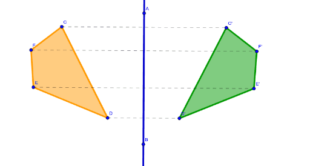

¿Qué es Simetría?
¿Qué es Simetría?
Como simetría se denomina la correspondencia exacta que se verifica en la forma, el tamaño y la posición de las partes de un objeto considerado como un todo. La simetría, como tal, es un concepto afín a distintas disciplinas como la geometría, el dibujo, el diseño gráfico, la arquitectura y las demás artes. Asimismo, podemos encontrarla ciencias como la biología, la física, la química y la matemática.
En Geometría, se denomina simetría a la correspondencia exacta que se registra en la disposición regular de las partes o puntos que conforman un cuerpo o figura, considerado con relación a un centro, eje o plano. Así, se verifican distintos tipos de simetrías:
Simetría esférica: es aquella que ocurre bajo cualquier tipo de rotación.

Simetría axial (también llamada rotacional, radial o cilíndrica): es aquella que ocurre a partir de un eje, lo que significa que cualquier giro producido a partir de ese eje no conduce a ningún cambio de posición en el espacio.
Simetría reflectiva o especular: es aquella definida por la existencia de un único plano donde una mitad es el reflejo de la otra.
Simetría de traslación o traslacional: es aquella que se verifica en un objeto o figura cuando este se repite a una distancia siempre idéntica del eje y a lo largo de una línea que puede estar colocada en cualquier posición y que puede ser infinita.

Vídeos para reforzar lo aprendido
Cuestionario para reforzar lo aprendido